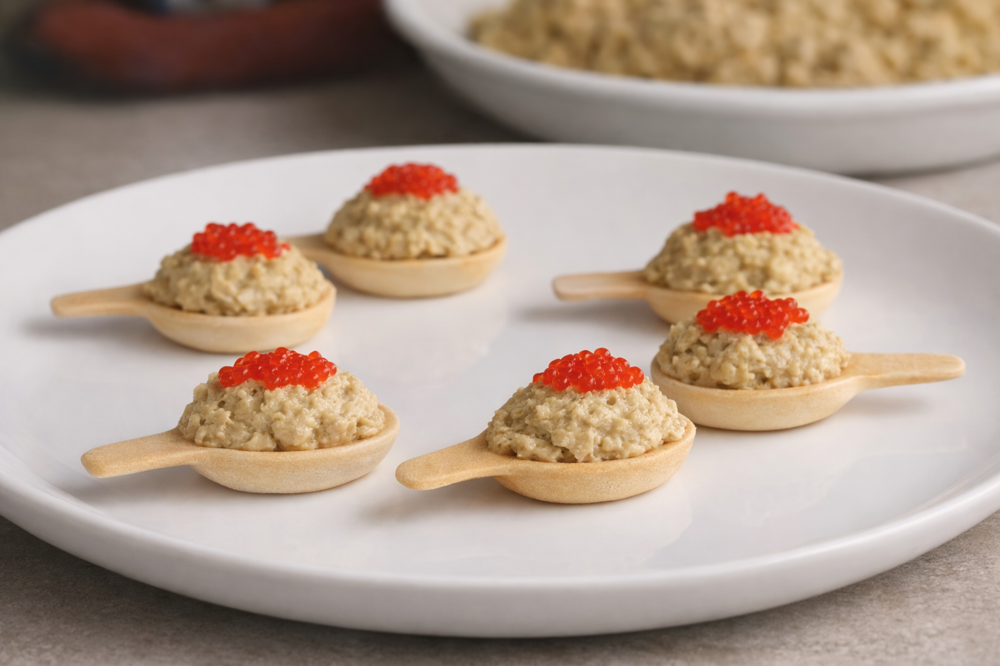
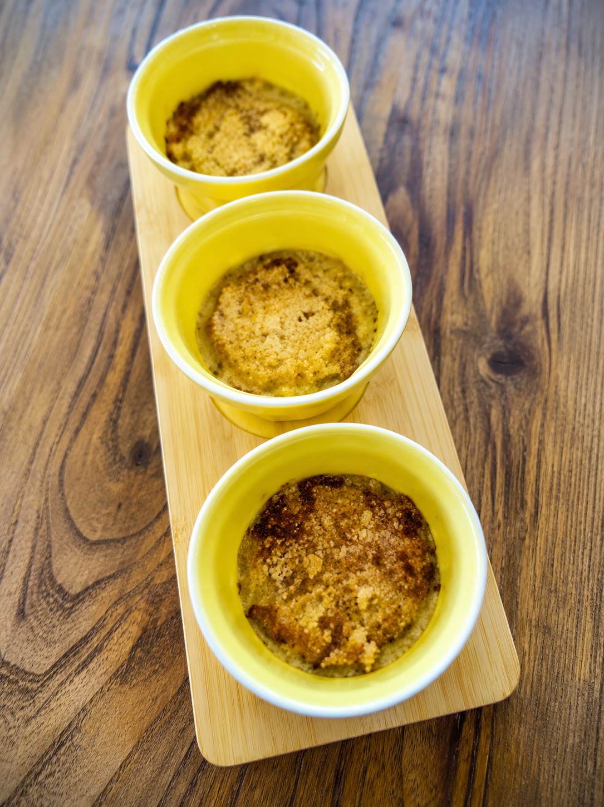
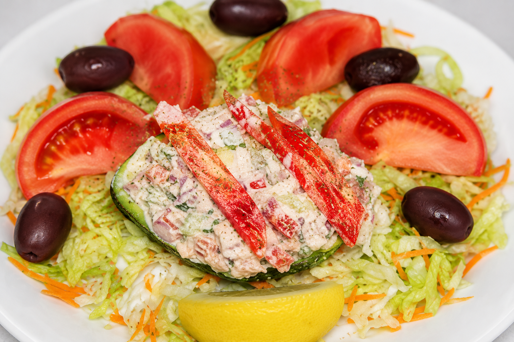
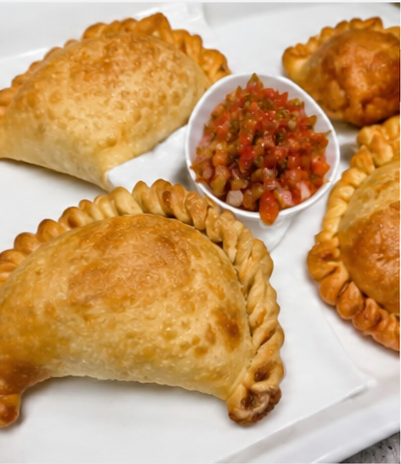
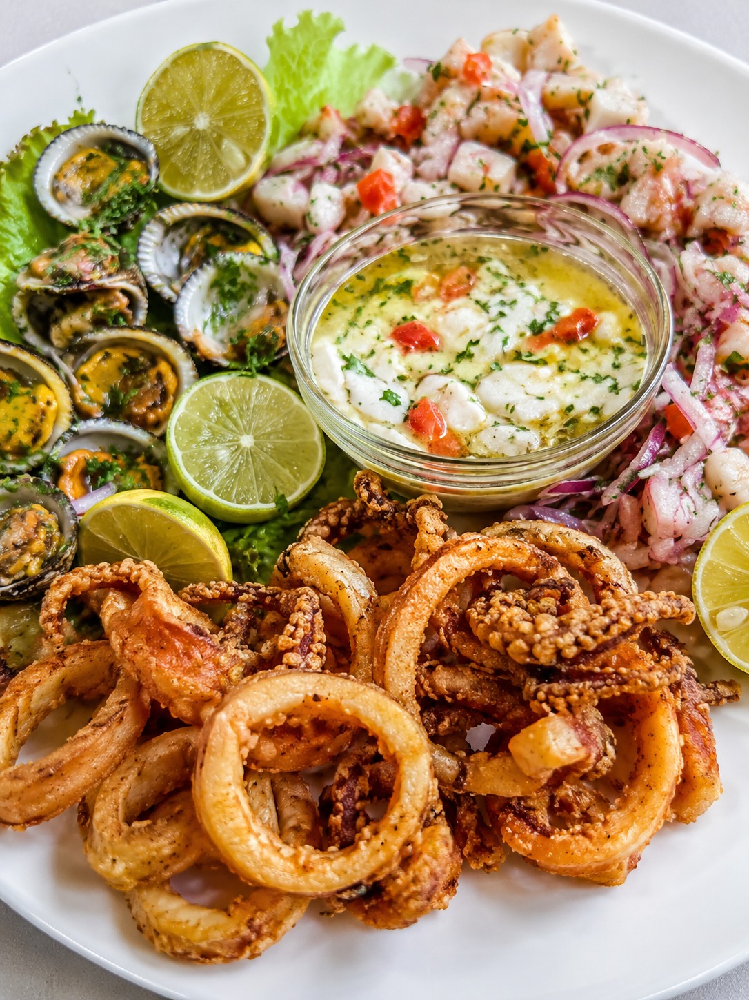
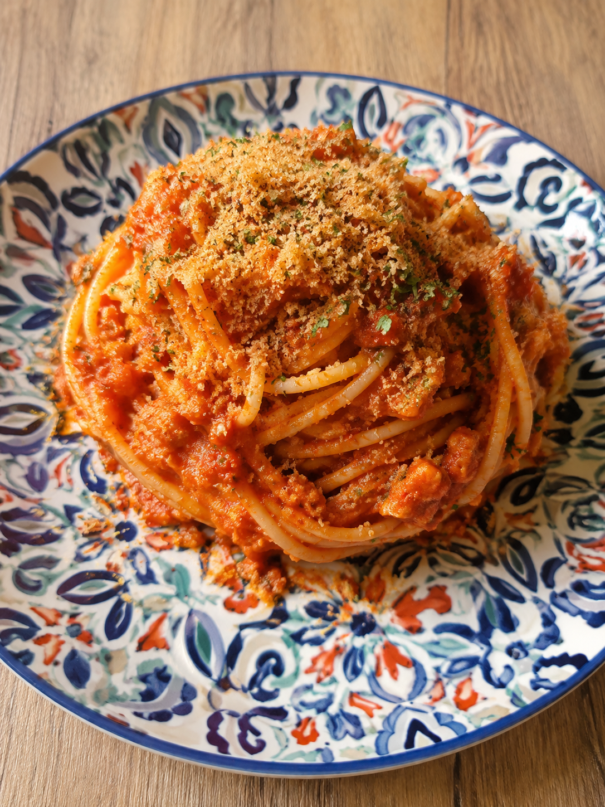

Nuestras 10 Especialidades

1. Falsa mousse centollo en cucharitas
Huevos cocidos, palitos de cangrejo, mejillones al natural escurridos, berberechos al natural, mayonesa, nata para cocinar, sal, cucharitas comestibles.
By Berta Álvarez
2. Crema de centolla con crujiente de pan
Centollas cocidas, cebollas medianas, leche entera con calcio, maicena, sal, pimienta negra, nuez moscada, aceite de oliva virgen extra, pan rallado tostado.
By Arianne • ⏱ 50 min • 👥 8-10 Comensales
3. Palta rellena con salpicón de centolla
Carne de centolla cocida, cebolla morada en cuadritos, pimiento morrón en cuadritos, apio cortado en cuadritos, cilantro picado, mayonesa, mostaza a la piedra.
By Jon Michelena • ⏱ 30 min • 👥 2 raciones
4. Empanadas de chupe de centolla con camarones
Carne de centolla cocida, camarones desviscerados y troceados, mantequilla sin sal, cebolla cortada en cuadritos, masa para empanadas.
By Jon Michelena • ⏱ 2 horas • 👥 14-15 raciones
5. Mariscada de crustáceos y centolla rellena
Centolla viva de 1.5 kg aproximadamente, conchas finas vivas, gambas frescas grandes, limones y medio medianos, ajos muy gruesos, perejil fresco fino.
By Alexis Urrutia • 👥 4 personas
6. Spaghetti con carne de centolla
Centollas hervidas, spaghetti, cebollas en daditos, ajo en daditos, concentrado de tomate, brandy, estragón, tomates cherry partidos por la mitad, aceite de oliva.
By Arianne • ⏱ 40 min • 👥 4 Comensales7. Croquetas cremosas de centollo
Carne de centollo desmenuzada, harina de trigo, leche entera, mantequilla, cebolla picada fina, huevo, pan rallado y aceite para freír.
By Chef Especialista • ⏱ 60 min8. Arroz caldoso con centollo y gambas
Arroz bomba, un centollo fresco, gambas, pimiento verde, tomate triturado, azafrán, caldo de pescado concentrado y un toque de vino blanco.
By Recetas del Mar • ⏱ 45 min • 👥 3 Comensales9. Canelones gourmet rellenos de centolla
Placas de pasta para canelones, carne de centolla, puerro, zanahoria, salsa bechamel ligera, queso parmesano rallado para gratinar al horno.
By Cocina Tradicional • ⏱ 50 min10. Salpicón tradicional de centollo gallego
Centollo cocido, huevo duro, pimiento verde, pimiento rojo, cebolleta fresca, aceite de oliva virgen extra, vinagre de jerez y sal marina.
By Tradición Marina • ⏱ 20 min • 👥 4 Comensales